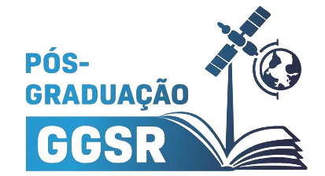
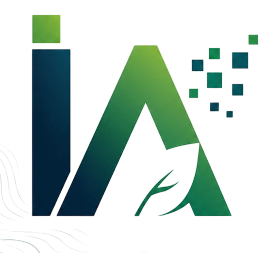
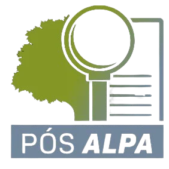

Bolsa de até 70% na
matrícula da sua Pós
Participe gratuitamente da prova de seleção e avance rumo às melhores oportunidades da área ambiental.
O que é a Prova da Bolsa?
A Prova da Bolsa da Ambiental Pro é a sua grande chance de alavancar a carreira na área ambiental pagando muito menos. Disponibilizamos descontos de até 70% na matrícula para os candidatos com melhor desempenho.
A avaliação é 100% online, totalmente gratuita e foi cuidadosamente elaborada para testar seus conhecimentos e reconhecer o seu potencial. Não perca a oportunidade de se especializar nas áreas mais requisitadas do mercado com a chancela da Ambiental Pro e da Anhanguera.
Escolha sua Pós-Graduação

Georreferenciamento, Geoprocessamento e Sensoriamento Remoto
Reconhecida pelo CREA, para graduados de qualquer área que desejam atuar na área de Georreferenciamento, Geoprocessamento e Sensoriamento Remoto.
Valor integral: R$ 7.970,00 (sem desconto)
Informações do Curso:
- Título: Especialista
- Duração: 12 meses
- Carga Horária: 440 horas
- Modalidade: 100% EAD
- Professores: Henrique Gonzalez, Raquel Carnivalle Melillo, Rodolfo Finatti, Vitor do Sacramento, Luís Antônio Soares, Ana Beatriz Ulhoa, Charlie Turette Lopes, Bismarck Feuchard
Grade do Curso:
- Geotecnologias aplicadas à área ambiental
- Sensoriamento Remoto e PDI
- Cartografia: Fundamentos e Técnicas
- Referência Espacial e Geodésia
- Topografia aplicada ao georreferenciamento
- Agrimensura legal
- Perícia Ambiental
- Fundamentos de Programação para Ciência de Dados
- Bancos de Dados e Big Data
- WebMaps e Dashboards
- Gerenciamento Estratégico de Projetos
Inteligência de Dados Ambientais
MBA pioneiro focado no desenvolvimento de habilidades práticas, técnicas e gerenciais para se tornar um Especialista em Estratégia de Dados Ambientais.
Valor integral: R$ 11.970,00 (sem desconto)
Informações do Curso:
- Título: Especialista (MBA)
- Duração: 12 meses
- Carga Horária: 400 horas
- Modalidade: 100% EAD
- Professores: Henrique Gonzalez, Marlon Fernandes de Souza, Lucas Baldoni, Vitor do Sacramento, Vitor Amorim
Grade do Curso:
- Ambiental Trends: Futuring & Negócios
- Fundamentos de Programação para Ciência de Dados
- Inteligência Artificial e Machine Learning
- Bancos de Dados e Big Data no Setor Ambiental
- Geotecnologias aplicadas à área ambiental
- Sensoriamento Remoto e PDI
- Gestão de Risco e Sustentabilidade Corporativa
- Modelagem e Análise de Decisão
- WebMaps e Dashboards
- Escritório de Projetos Ágil

Inteligência Artificial Aplicada ao Meio Ambiente
Capacita profissionais com competências estratégicas e inteligência tecnológica para a arquitetura de sistemas automatizados no setor ambiental.
Valor integral: R$ 11.970,00 (sem desconto)
Informações do Curso:
- Título: Especialista
- Duração: 12 meses
- Carga Horária: 440 horas
- Modalidade: 100% EAD
- Professores: Henrique Gonzalez, Hermann Fernandes, Victor Valente Silvestre, Vinícius Ragghianti, Ariel Dias, Luís Otávio Perin, Danilo Moreira Soares
Grade do Curso:
- Fundamentos de IA e Machine Learning
- Arquitetura de Dados Ambientais
- IA Generativa em Estudos Ambientais
- IoT e Redes de Sensores em Tempo Real
- IA e Visão Computacional na Análise Geoespacial
- Abordagens de desenvolvimento de software
- Desenvolvimento de Sistemas com Agentes Autônomos
- Gêmeos Digitais de Ecossistemas
- Ética, Privacidade e Segurança de Dados
- Teste e Inspeção de Software
- Análise e modelagem de negócios

Auditoria, Licenciamento e Perícia Ambiental
Pós-Graduação prática com estudos de caso, auditorias e uso de SIG (QGIS) alinhados às demandas do mercado e normas internacionais.
Valor integral: R$ 11.970,00 (sem desconto)
Informações do Curso:
- Título: Especialista
- Duração: 12 meses
- Carga Horária: 440 horas
- Modalidade: 100% EAD
- Professores: Henrique Gonzalez, Rafael Timbola, Bruna Balestrin Piaia, Hugo Ferreira, Anelise Gomes da Silva, Relva Beltrão, Jéssica Michalak Besen
Grade do Curso:
- Perícia Ambiental (Processo e Metodologia)
- Licenciamento Ambiental
- Avaliação de Riscos e Impactos Ambientais
- Controle e prevenção da poluição ambiental
- Gestão de Resíduos Sólidos
- Geoprocessamento e Sensoriamento Remoto
- Aerofotogrametria aplicada à Perícias
- Auditoria Ambiental
- Recuperação de Áreas Degradadas
- Valoração Econômica de Recursos Naturais
- Elaboração e Contestação de Laudos